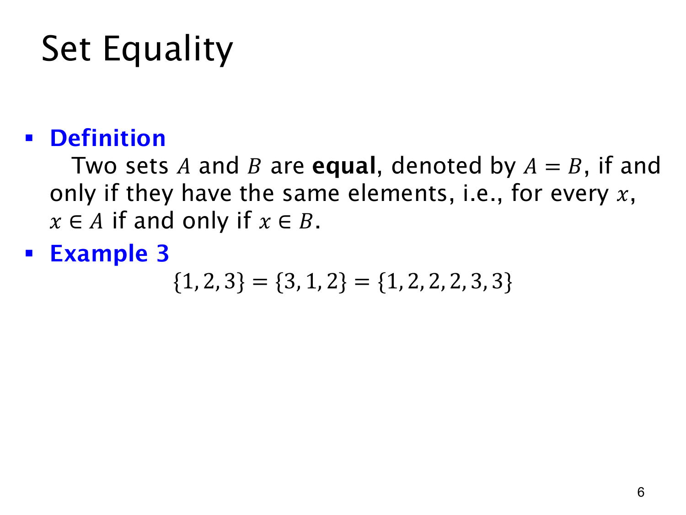

L1.4 · 第 6 页讲解原文
查看这一页课件

集合相等只看成员
两个集合 A 与 B 相等，记作 A=B，当且仅当它们有完全相同的元素。用成员关系表达就是
A=B⟺∀x(x∈A↔x∈B).
这句话有两个方向：凡是 A 的元素也必须是 B 的元素；凡是 B 的元素也必须是 A 的元素。只满足一个方向时，不能断定相等。
课件给出
{1,2,3}={3,1,2}={1,2,2,2,3,3}.
第一、第二种写法次序不同，但成员都是 1,2,3；第三种写法把 2 和 3 重复列出，却没有增加新成员。因此三者表示同一个集合。集合不是按位置编号的序列，也不记录某元素出现多少次。
判断集合是否相等时，可以先去除重复项，再比较各自不同的成员。例如 {1,2,3}={1,2,4}，因为 3 属于左边却不属于右边。这种“找出一个只属于其中一边的元素”的办法，也能直接说明两集合不相等。